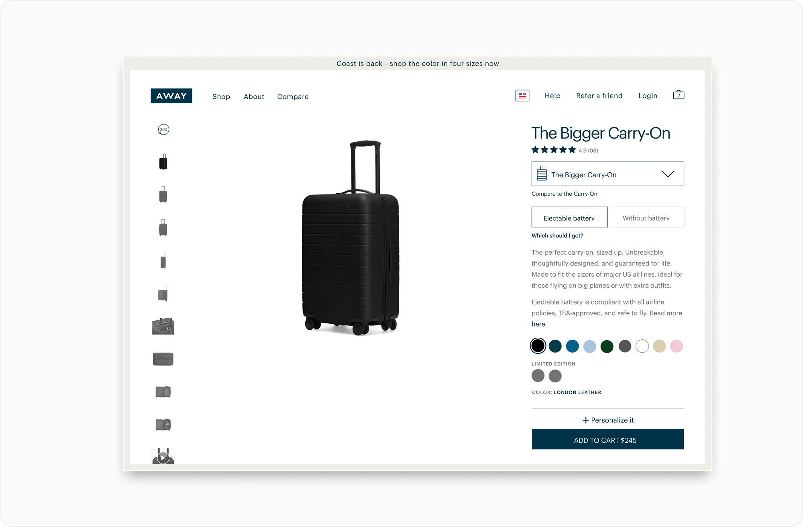
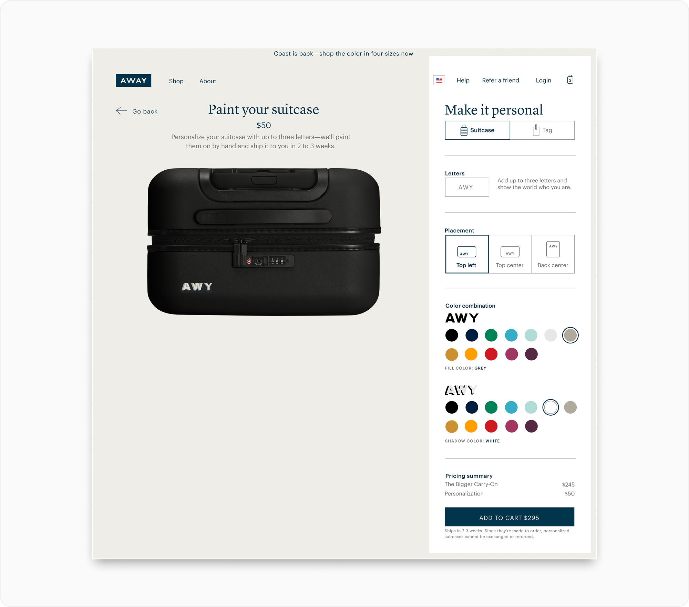
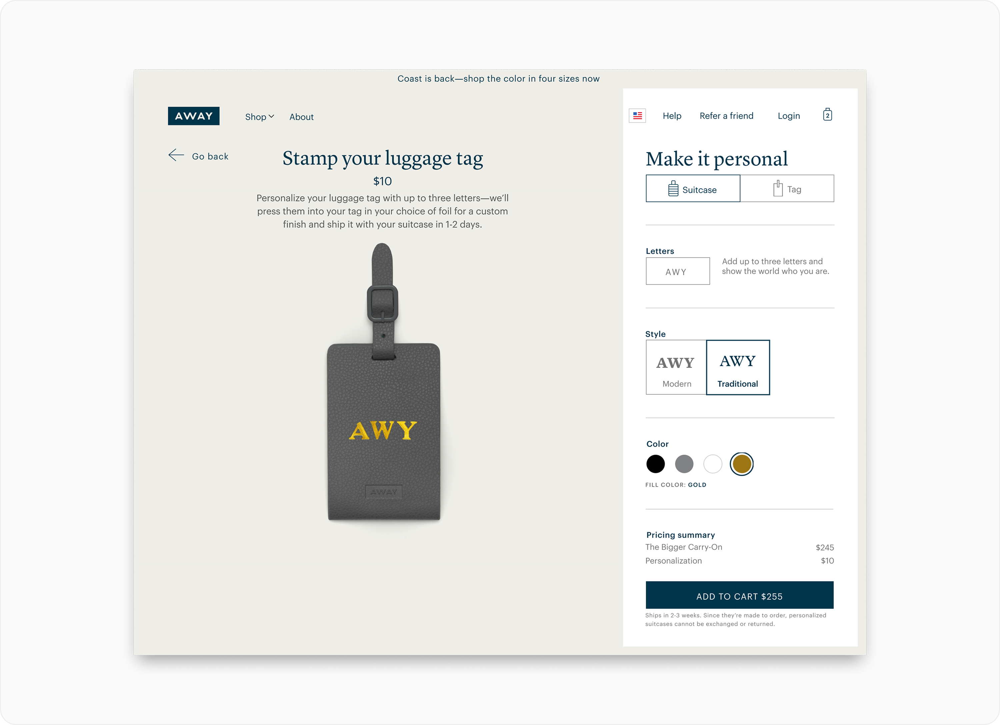
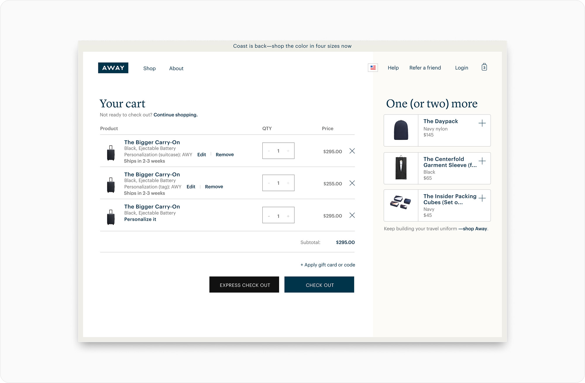
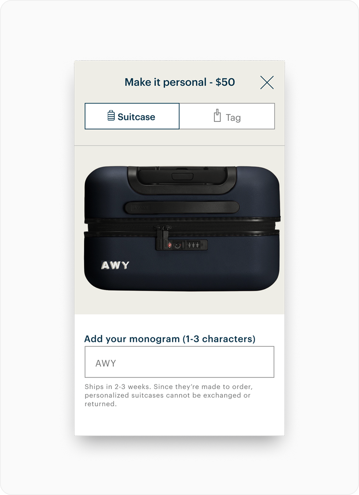
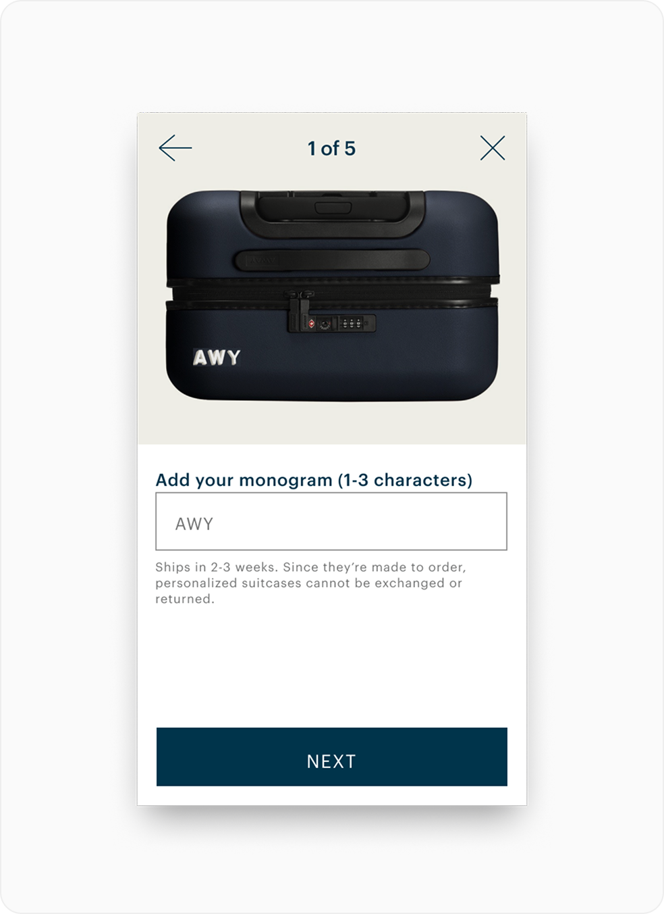
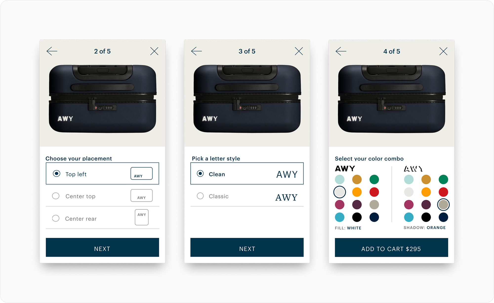

Away's first personalization experience — adopted on ~20% of luggage and handbag orders, then shut down when production couldn't keep up.
Away sold luggage and travel goods as fixed products with no way to make them your own. Personalization — monogramming, engraving, custom colors — was a known purchase driver in the category, but the capability didn't exist. I was brought in as the sole designer to build it.
I defined the experience model, designed the PDP entry point, and shipped a configurator across desktop and mobile. After launch, personalization was adopted on ~20% of luggage and bag orders. Demand outpaced Away's production capacity, and we had to pause the feature when operations couldn't keep up.




Mobile also became an opportunity to push the brand expression further. I focused on crafting transitions and micro-animations that made each customization choice feel considered — color selections that bled in with purpose, monogram characters that settled into place rather than just appearing.
Away's visual identity has a lot of restrained confidence to it, and the motion language was a way to carry that through into an interactive context. The mobile experience carried the same interaction model but adapted the layout for a single-column, thumb-friendly context.


